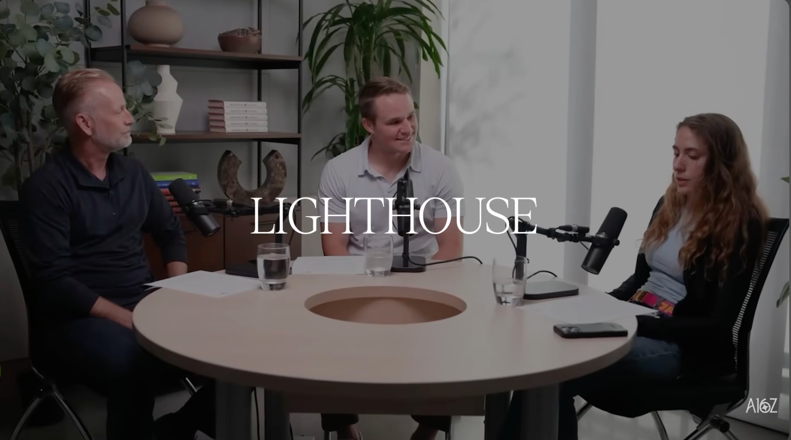

一句话总结：AI 创业公司的销售起点，不由大客户是否耀眼决定，而由买方承担多大风险、证明能否传播、客户是否已有预算共同决定；先找肯买的人，再用收入与反馈修正路线。
本章发言来源：Elena Burger（a16z 播客主持人）；Joe Schmidt（框架作者、a16z 嘉宾）。
Joe 的问题来自 101 公路：相邻的 AI 公司卖着相似软件，却都把火力投向旧金山同一批知名企业。大 Logo 自带新闻价值，但“人人看得见”不等于“只有这些客户需要”。
因此，AI 创业先别迷信大客户。真正要问的是：标杆能否带动同行；客户买错会承担多大风险；是否已有人愿意为当前产品付钱。三个问题比客户名单更早决定销售动作。
这不是反对服务大企业，而是反对把知名度当成战略。没有大客户，照样能先做 Land Grab；若新能力必须靠行业头部证明安全，广撒网只会制造拒绝。
本章要点：客户名气是结果变量；风险、证明传播和付费意愿才是选路变量。
本章发言来源：Elena Burger（a16z 播客主持人）；Joe Schmidt（框架作者、a16z 嘉宾）；Andy McCall（Samsara、Meraki 销售组织建设者）。
Joe 的矩阵有两个轴。纵轴是买方暴露度：产品出错会不会触碰监管，结果是否直接呈现给客户，购买者会不会为失败承担明显责任。横轴是证明能否传播：一个标杆客户的采用，能否让同一行业的其他买家更放心。
高暴露度、证明又能传播的市场，更像 Lighthouse。法律 AI 是节目中的例子：新品类风险高，少数知名律所的采用能替后来者回答“它是否安全”，让第一批关系变成行业信用资产。
低暴露度、已有预算、价值能直接计算的市场，更像 Land Grab。客户不是先问谁在用，而是比较新方案能否节省人工、改善回款或替代旧软件。Joe 把差异压成一句：Lighthouse 交付 proof，Land Grab 交付 math。
本章要点：先看证明能不能传播，再看买方承担多大风险；两个轴共同决定成交靠背书还是靠 ROI。
本章发言来源：Elena Burger（a16z 播客主持人）；Andy McCall（Samsara、Meraki 销售组织建设者）；Joe Schmidt（框架作者、a16z 嘉宾）。
Samsara 遇上美国电子日志设备要求分阶段落地，运输行业突然必须寻找预算。这样的监管窗口听起来应该先攻最大的运输公司，实际反馈却很直接：一家成立不久、功能还少的供应商，冷电话打进头部企业，只会听到“没听过你们，不买”。
团队于是转向中型市场。那里对社会证明要求更低，部署和销售周期更短。早期目标不是写出完美战略，而是确认“我们有没有东西是某个人愿意买的”。销售速度同时也是学习速度。
Meraki 也走过相似路径。Cisco 与 HP 已经占住大企业，Meraki 就向 IT 团队更小的客户证明云端配置更快、更简单，并通过 webinar 赠送接入点，让用户直接体验差异。它卖的不是弱化版愿景，而是一条更短的验证回路。
本章要点：早期客户不仅贡献收入，也贡献产品反馈；大账户漫长的部署周期可能同时推迟两者。
本章发言来源：Joe Schmidt（框架作者、a16z 嘉宾）；Andy McCall（Samsara、Meraki 销售组织建设者）。
Andy 讨论 ACV 时先画了一条经济门槛。假设一套销售引擎在 15,000 美元的年合同价值上能够健康运转，就不要接只有 8,000 美元、会拖垮单位经济的订单；但越过门槛以后，也不必为了更漂亮的合同停止成交。
先重复拿下能盈利的客户，团队才有机会练熟获客、部署和续约。随着证明堆积，更大的公司会出现，ACV 也会逐步上升。一直等待大 Logo，销售与产品反馈都无法形成样本。
这正是节目最反虚荣的一层：难赚的收入，没有额外加分。同样一美元，不会因为来自知名公司就自动获得倍数。创始人需要的是可持续收入与更强产品，不是一段最费力的成交故事。
本章要点：先守住单位经济底线，再追求重复性；合同名气不能代替销售引擎。
本章发言来源：Elena Burger（a16z 播客主持人）；Andy McCall（Samsara、Meraki 销售组织建设者）；Joe Schmidt（框架作者、a16z 嘉宾）。
AI 产品特别容易把试用做成科学项目。能力每天变化，客户不断追加“能不能再做这个”，团队也总能回答“也许下一版可以”。结果是 POC 一直延长，双方都在投入，却没人知道何时算成功、何时应该购买。
Andy 的约束很朴素：先写结束日期，再写成功标准。30、45 或 60 天取决于部署复杂度，但双方必须预先同意，达到什么结果就继续采购。产品是否工作，与客户是否把产品用在正确对象上，也要拆成两份责任。
这对选路同样有诊断价值。若产品能在限定周期内展示明确 ROI，Land Grab 的销售闭环有机会成立；若客户根本不允许轻量测试，且每次购买都要经过监管、采购和多方批准，团队就应按 Lighthouse 配置关系与前置部署能力。
本章要点：POC 不是免费开发期；期限、指标与责任边界必须在启动前写清。
本章发言来源：Elena Burger（a16z 播客主持人）；Joe Schmidt（框架作者、a16z 嘉宾）；Andy McCall（Samsara、Meraki 销售组织建设者）。
两种策略都不是终身身份。Meraki 与 Samsara 从 Land Grab 起步，成熟后按学校、城市等垂直行业寻找头部客户；Lighthouse 公司拿下行业前几名，也会沿名单向下扩张，把深度关系销售变成更标准的规模化动作。
AI 又让这个选择更重要。Joe 认为，过去十多年大量公司靠 PLG 和楔子产品切入，是因为 CRM、HR、ITSM 等平台市场早已稳定。AI 改变的是人与 Agent 的分工，不只是把按钮换颜色，因此平台级“大软件”重新出现窗口。
可宏大周期不能替创始人成交。Andy 的比例是：约 1% 时间讨论战略，约 99% 时间执行。先选一个当前最合理的动作，然后打电话、上飞机、见客户，观察谁愿意为今天的产品付钱。收入与反馈会告诉你何时坚持、何时换象限。
本章要点：框架负责暴露假设，客户负责判决；分析越久，错过窗口的成本越高。
| 数字 | 节目中的含义 | 回听 |
|---|---|---|
| 2015 / 2017 | Samsara 成立年份与 Andy 加入年份，均为嘉宾口述 | [00:07:51–00:08:04] |
| 15,000 / 8,000 美元 | Andy 用来解释 ACV 健康门槛的假设数字 | [00:17:26–00:18:06] |
| 30 / 45 / 60 天 | POC 应预先确定的可能期限 | [00:22:43–00:23:55] |
| 1% / 99% | Andy 建议早期创始人分给策略与执行的时间比例 | [00:37:49–00:38:22] |
| 判断 | 支持它的材料 | 限制或反例 |
|---|---|---|
| 先拿大客户能打开市场 | 高风险行业的证明会在买方之间传播 | 长销售周期会拖慢收入和产品反馈 |
| Land Grab 更适合既有预算 | 替代型产品可以直接展示 ROI | 高配置成本可能让 POC 无法快速闭环 |
| Lighthouse 与 Land Grab 可二选一 | 起步阶段需要集中资源 | 公司成熟或进入新垂直行业后通常会切换策略 |
| AI 重新打开平台销售 | 人与 Agent 的工作分工正在变化 | 这是 Joe 的周期判断，不是所有 AI 产品都能卖成平台 |
| 时间 | 内容 |
|---|---|
| [00:01:21–00:05:03] | 二轴框架：买方暴露度与证明传播 |
| [00:07:51–00:13:26] | Samsara、监管窗口与中型市场 |
| [00:15:41–00:16:22] | Harvey 的 Lighthouse 路径 |
| [00:17:00–00:21:39] | ACV 门槛与 Meraki 试用动作 |
| [00:21:39–00:25:08] | AI POC 的期限、指标与责任 |
| [00:27:15–00:31:03] | 策略切换与销售人员画像 |
| [00:31:19–00:35:31] | PLG 周期与大软件销售窗口 |
| [00:35:32–00:38:47] | Lighthouse 扩张及 1% 策略、99% 执行 |
源转录时间戳正文未修改。land graph 可由节目标题与语境确认是在说 Land Grab；Hebea、Stutt、Dekagon 和结尾 Got the goat 仍属疑似 ASR 误识别，以原音频为准，本文未据此静默改写公司名或残句。